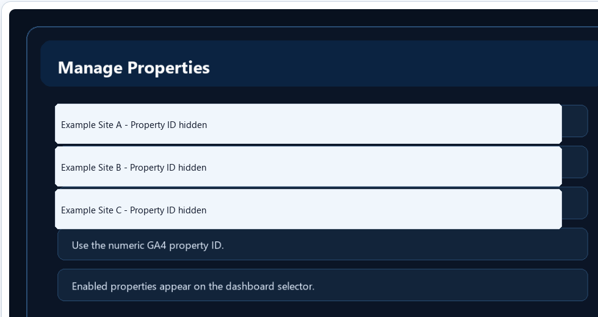

Managing Properties

Properties define which websites the dashboard can query.
- Use the numeric GA4 property ID.
- Do not use the G- measurement ID or Google Cloud project number.
- Disable properties you do not want in the dashboard selector.